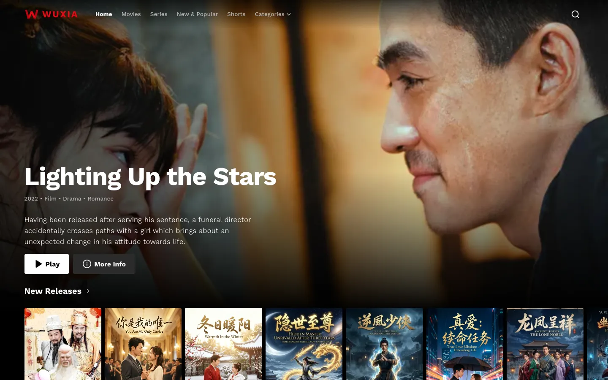
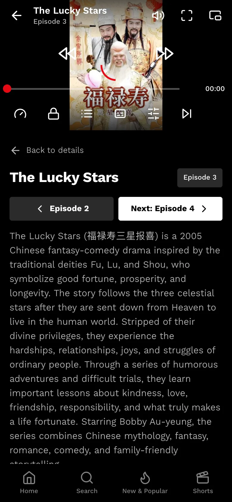
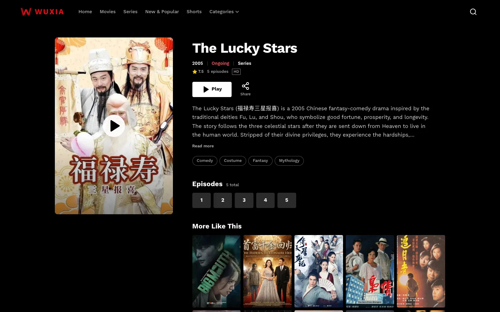
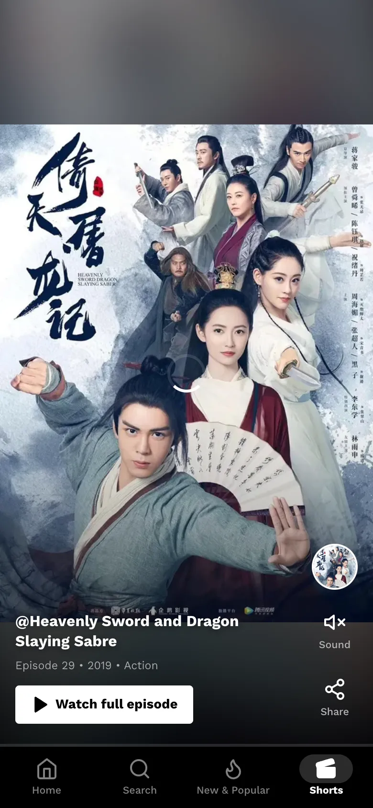
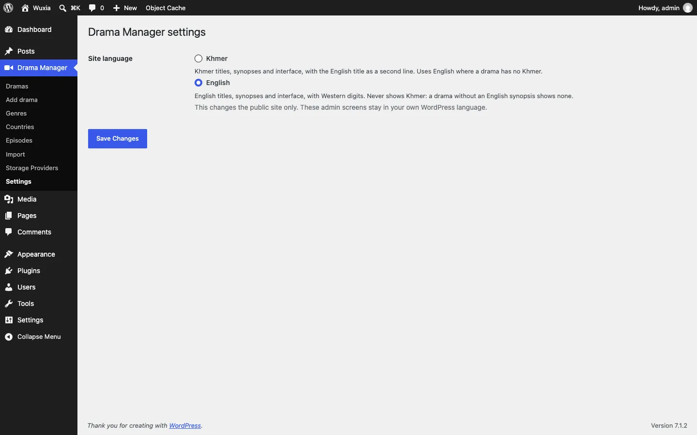
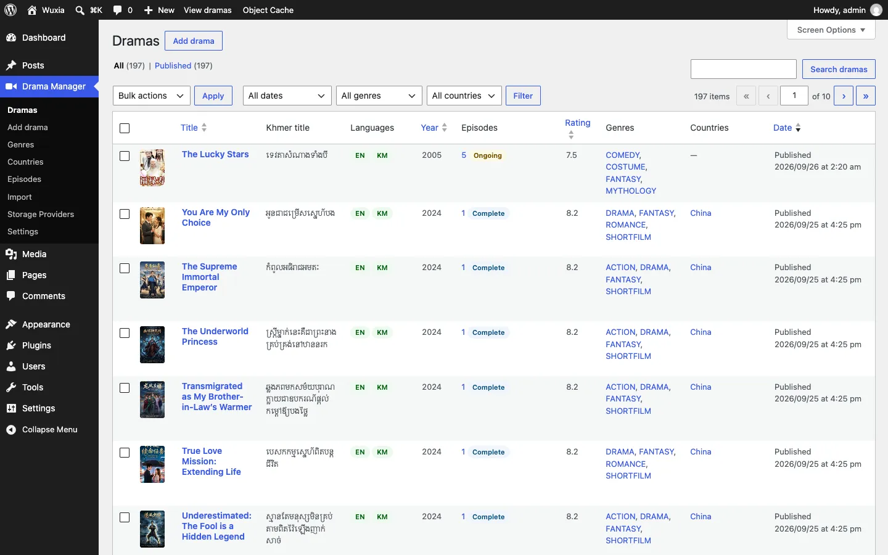

Your own Netflix‑style drama site, on plain WordPress.
A free theme and plugin for Chinese and Hong Kong series and films: poster rows, title pages, an HLS player, Shorts, and the whole site in Khmer or English.
- Version 1.1.0
- WordPress 6.5+
- PHP 8.1+
- Free, GPL-2.0


Trusted by
Running a site on Wuxia? Get in touch on GitHub to be listed here or to have your logo added to the Site logo switch.
Two downloads, one site
Install both. The plugin keeps your catalogue; the theme shows it. Switch themes later and every drama stays.
Wuxia Core plugin
The Drama Manager in wp-admin.
- Dramas and episodes with English and Khmer titles and synopses, genres, countries, posters and ratings
- Storage providers for your HLS streams, played through a signed media address so the storage URL never reaches the page
- Import whole series from iVault JSON exports
- Settings → Site language: Khmer or English
Wuxia theme
The front end your viewers see.
- Billboard, poster rows, Top 10 and genre rows on the home page
- Title pages with episode lists and “More Like This”
- An HLS player with subtitles, quality, speed and up-next
- New & Popular, search, and a vertical Shorts feed
Title pages that sell the next episode
Poster, rating, year and status up top, a Play button that remembers where each viewer stopped, then every episode one tap away and similar titles below.

Shorts: your catalogue as a feed
A full-screen, swipe-up feed that plays a clip from a random episode of each title, with a button straight to the full episode.

Khmer or English, one switch
Pick the site language in Drama Manager → Settings. The whole public site follows: menus, player, titles, synopses and numbers.
The English site never shows Khmer. The Khmer site keeps each English title as a second line.

A Drama Manager, not a blog
Dramas, episodes, genres, countries, storage and imports in one menu. The list shows each title’s episodes, status, rating and which languages are filled in.

Install in five steps
No Docker needed. Pages run on any WordPress host; video plays when nginx serves the site, with the two media rules added.
- Install WordPress as usual
With your host’s one-click installer, or from wordpress.org/download.
- Add the plugin
Plugins → Add New Plugin → Upload Plugin, choose
wuxia-core.zip, then Activate. - Add the theme
Appearance → Themes → Add New Theme → Upload Theme, choose
wuxia-theme.zip, then Activate. - Turn on readable links
Settings → Permalinks → Post name → Save. Shorts and New & Popular need it; WordPress reminds you if it’s off.
- Add your dramas
Drama Manager → Import for iVault exports, or Add drama by hand. Connect your video storage under Storage Providers and choose the language under Settings.
Updating later: download the new zips and upload them the same way; WordPress asks to replace the installed version. Each release lists SHA256SUMS so you can check a download.
Let video play: two nginx rules
WordPress checks each signed /media/ link and names the file; nginx fetches it from your storage and streams it. Viewers never see where your videos live, and PHP never carries video.
- Copy the rules
Download
nginx-wuxia-media.conf. Part 1 goes insidehttp { }, part 2 inside your site’sserver { }. - Point it at PHP
Change the lines marked
CHANGE: the samefastcgi_passas your site’s PHP block (for exampleunix:/run/php/php8.3-fpm.sock). - Make the cache folder
sudo mkdir -p /var/cache/nginx/wuxia && sudo chown -R www-data /var/cache/nginx/wuxia - Reload nginx
sudo nginx -t && sudo systemctl reload nginx, then play an episode: its.m3u8and.tsfiles answer200.
Without these rules the site still works, but every episode answers 501 Media is served through nginx. Setting up a server? The deployment guide walks through a new Ubuntu server, hosting panels and Cloudflare step by step.
Requirements
| WordPress | 6.5 or newer (tested with 7.1) |
|---|---|
| PHP | 8.1 or newer |
| Web server | nginx in front of WordPress, with Wuxia’s media rules, for video to play. Apache and LiteSpeed show the site but can’t play episodes. |
| Permalinks | “Post name” (or any readable structure) |
| Your videos | HLS streams (master.m3u8) on storage you own, such as Cloudflare R2, S3, Google Drive or Telegram. iVault can convert and upload them for you. |
| Optional | A Redis object cache speeds up large catalogues; WUXIA_MEDIA_KEY and WUXIA_SMTP_* in wp-config.php for a dedicated media key and outgoing mail. |
Questions
Is it free?
Yes. The theme and plugin are free software under the GPL, version 2 or later, like WordPress itself. Use them on as many sites as you like.
Do I need both downloads?
Yes. The plugin holds your dramas and episodes; the theme displays them. The theme runs without the plugin but has nothing to show, and it tells you so in wp-admin.
Where do the videos come from?
From your own storage. Each episode points at an HLS stream (master.m3u8). The iVault desktop app converts video files and uploads them to R2, S3, Google Drive, Telegram and more, then exports JSON the plugin imports.
Does it work on shared hosting?
The site does: install, import and every page in Khmer and English work on a standard WordPress 7.1 with no extra configuration. Video playback needs nginx with the media rules, which most shared hosting (Apache or LiteSpeed) can’t add. Use a VPS, or a panel that runs nginx and accepts custom configuration.
Episodes show “501 Media is served through nginx”
The server has no media rules, so WordPress refuses to answer rather than reveal your storage address. Add the nginx rules and reload nginx. A 403 “link has expired” just means the page is more than six hours old: reload it.
Can I show the site in English only?
Yes. Choose English in Drama Manager → Settings. Titles and synopses come from each drama’s English fields, and no Khmer is shown anywhere on the public site.
I’m using Wuxia. How do I get in touch?
Open a “Using Wuxia on your site” issue on GitHub. Tell us your site’s name and address, and whether you’d like it listed under Trusted by, your logo added to Drama Manager → Settings → Site logo, or help with setup. We reply there.
How do I update?
Download the latest zips from this page and upload them again; WordPress offers to replace the current version. Your dramas, episodes and settings stay.